UX / UI Design · EdTech
AtOnce
A services marketplace concept for the international education sector, helping schools and agents onboard partners, sell services, and guide students through applications without juggling half a dozen platforms.

01 — The brief
A marketplace for education services
AtOnce was pitched as a services marketplace: a place where organisations could connect consumers to services through a transparent, multi-party platform. For this project, the focus narrowed to international education: schools and financial services providers on one side, education agents and students on the other.
The core question was practical: what interface and journey gives wholesalers and retailers the simplest path to onboard, sell services, and keep applications moving? Students applying from overseas face language barriers, time-zone gaps, and a tangle of forms. Agents are stuck switching between platforms. Schools spend too long collating documents. AtOnce was meant to reduce all three.
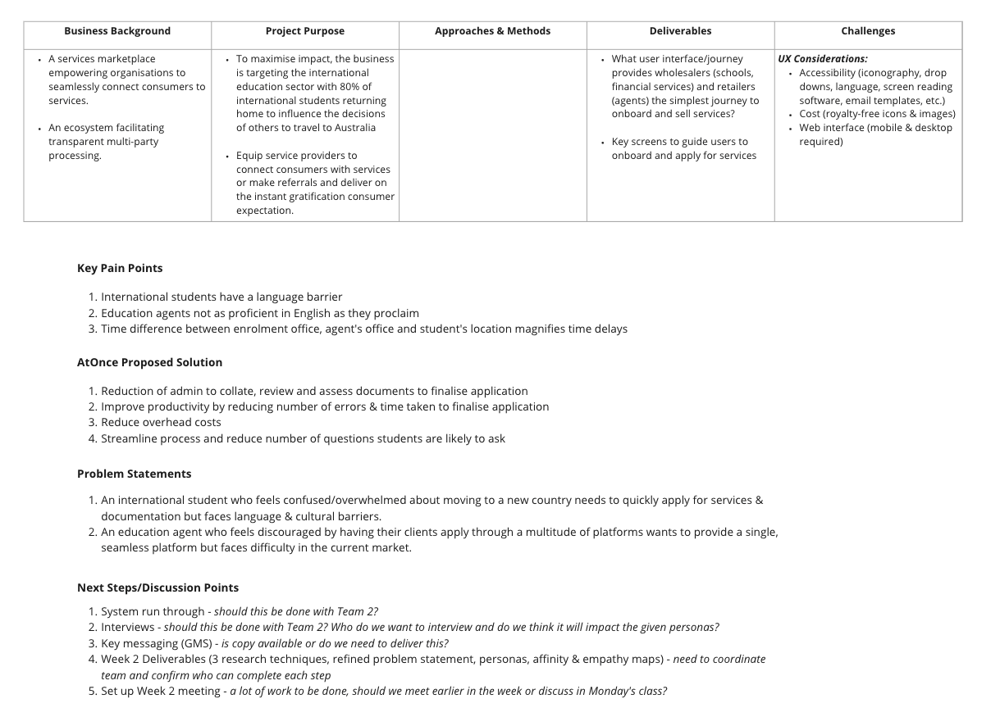
Project canvas: pain points, problem statements, and proposed outcomes mapped at the start of the project.
02 — Discover
Understanding agents, schools, and students
We started with qualitative and quantitative research, user interviews to hear how agents and school staff actually worked day to day, plus surveys and polls to test whether those patterns held at scale. The same themes kept surfacing: too much admin, too many errors, too many places to check for application status.
I mapped existing journeys to see where handoffs broke down between enrolment offices, agents, and students in different time zones. That gave us a baseline before we looked at what competitors were doing.
User interviews
Conversations with education agents and school administrators about how they onboard partners and manage student applications today.
Surveys & polls
Broader validation of the pain points we'd heard, language barriers, platform fragmentation, and delays caused by time differences.
User flows
Documented how new users moved through setup and onboarding in the current (fragmented) experience.
Competitive analysis. We reviewed Cohortgo, Edvisor, and ApplyBoard to see how they handled agent onboarding, application tracking, and student-facing flows. Cohortgo was strong on payments and agent management but didn't cover enrolments. Edvisor and ApplyBoard each had useful patterns, particularly around dashboard density and how much status visibility agents expected, but none solved the whole problem.
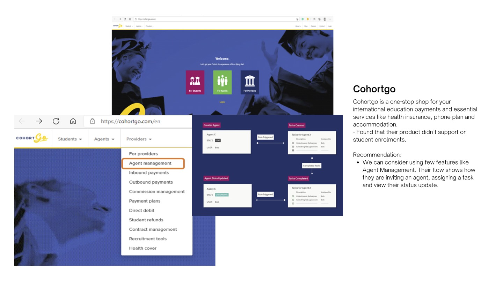
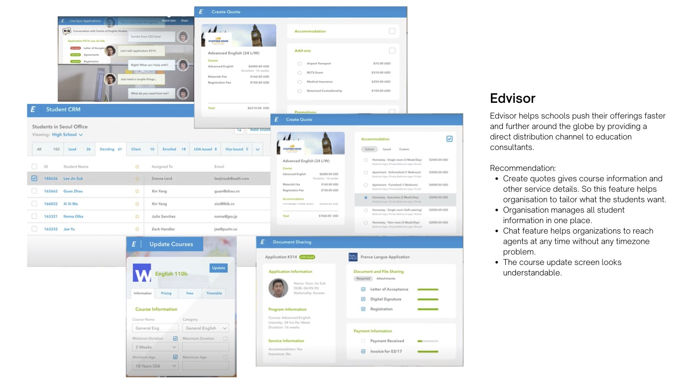
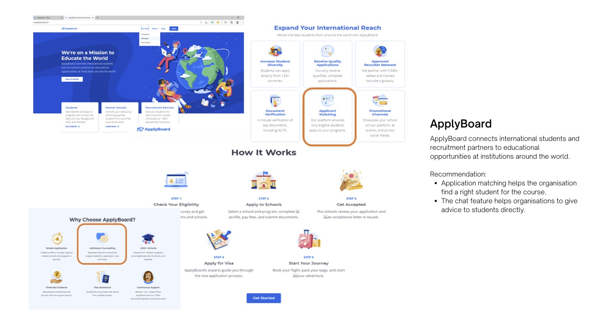
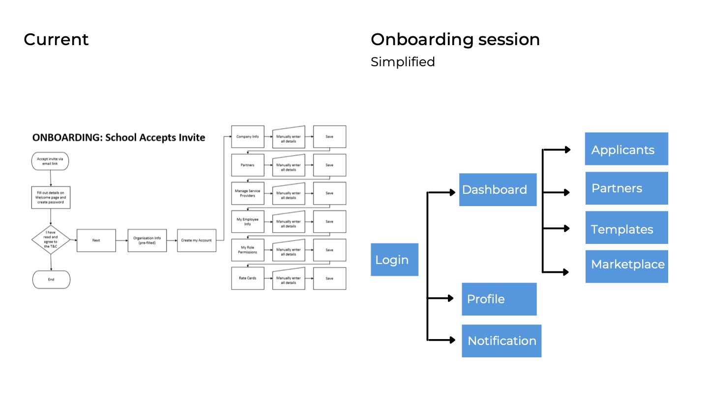
New user onboarding flow: mapped before wireframing.
03 — Define
From research to shared priorities
Interview notes and survey responses went into an affinity map so the team could see clusters instead of individual anecdotes. Two problem statements drove the rest of the project: students who feel overwhelmed applying from abroad need a clearer, faster path through services and documentation; agents who are tired of switching platforms need one place to manage clients end to end.
I developed a schools-focused persona, Sofia, who manages enrolments for an English language school in Sydney, to keep decisions grounded. She processes around 30 applications a month, tracks most of her work in Excel, and is tired of missing details, time-zone delays, and re-entering the same student information across systems.
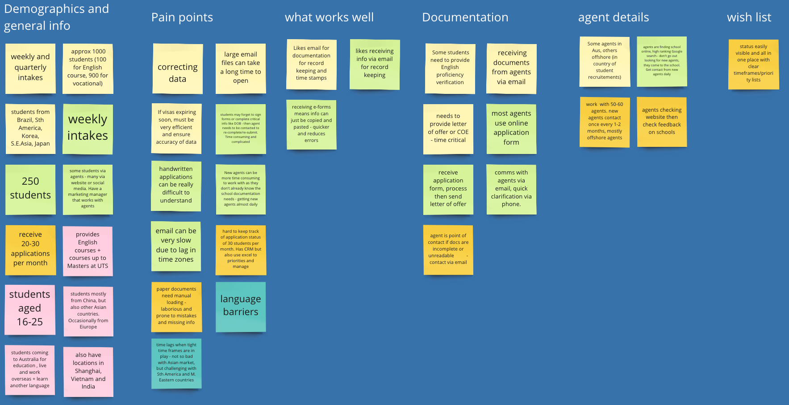
Affinity map: synthesising interview and survey findings into themes.
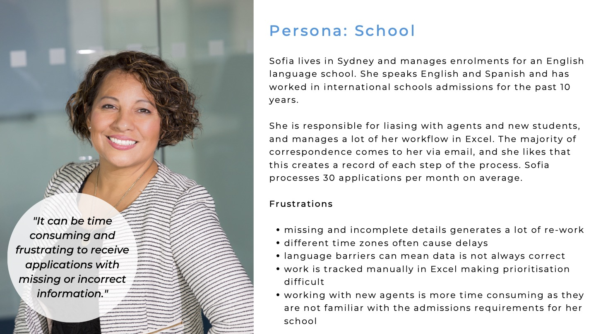
Schools persona: used to evaluate layout and workflow decisions.
04 — Develop
Flows, structure, and mid-fi wireframes
With the problem space defined, I worked through setup flows for new organisations, information architecture for the main product areas, and card sorting with the team to agree what belonged in primary navigation versus secondary settings.
Mid-fidelity wireframes tested the dashboard, marketplace, applicant management, and form-builder concepts before any visual polish. The goal was to validate structure: could a school admin find an applicant, invite a partner, and edit a template without getting lost?
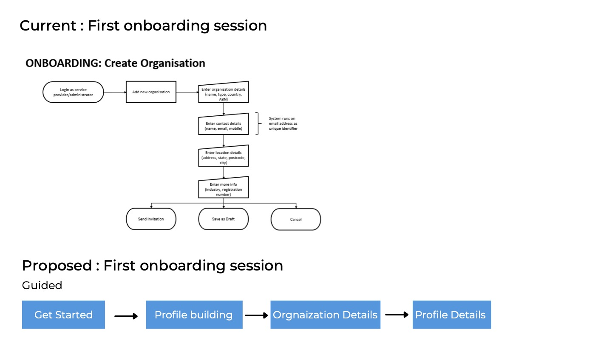
Setup flow: organisation configuration before day-to-day use.
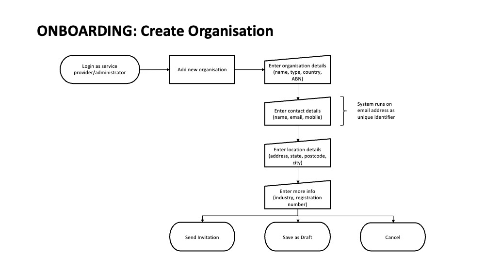
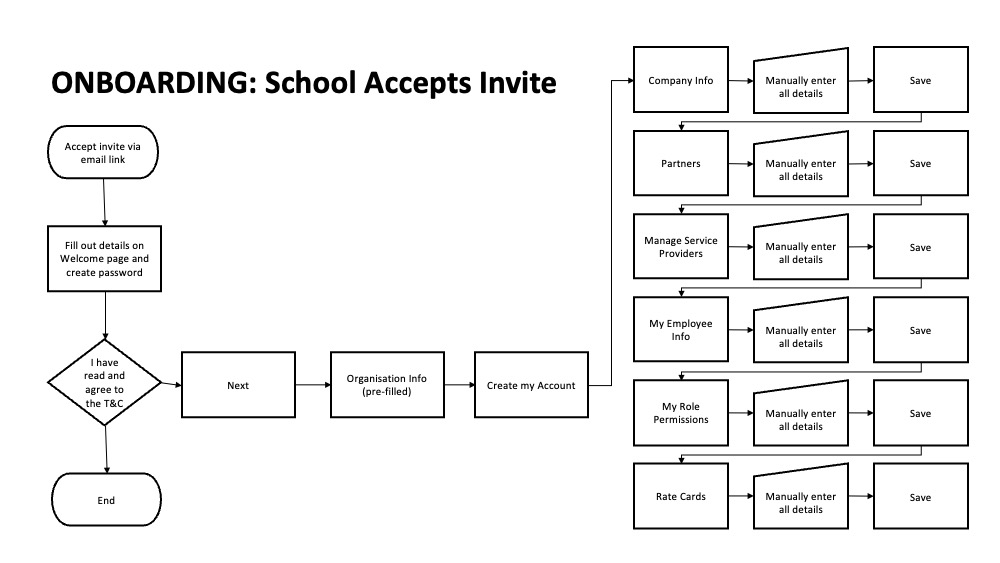
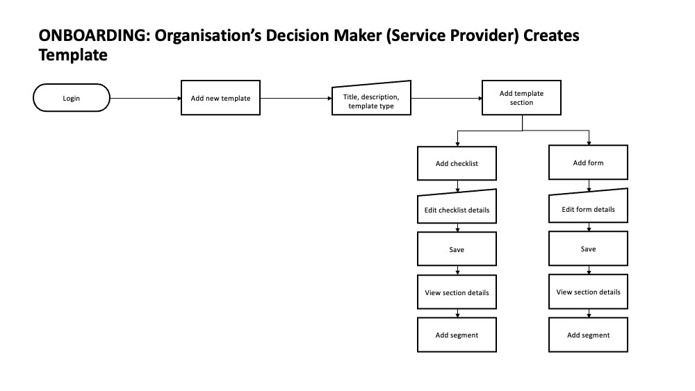
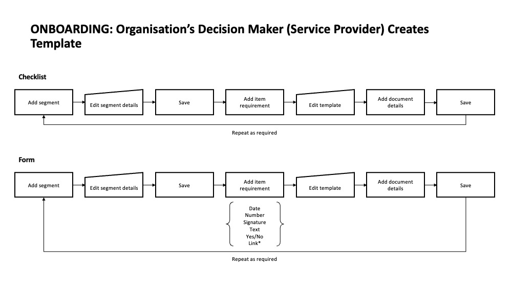
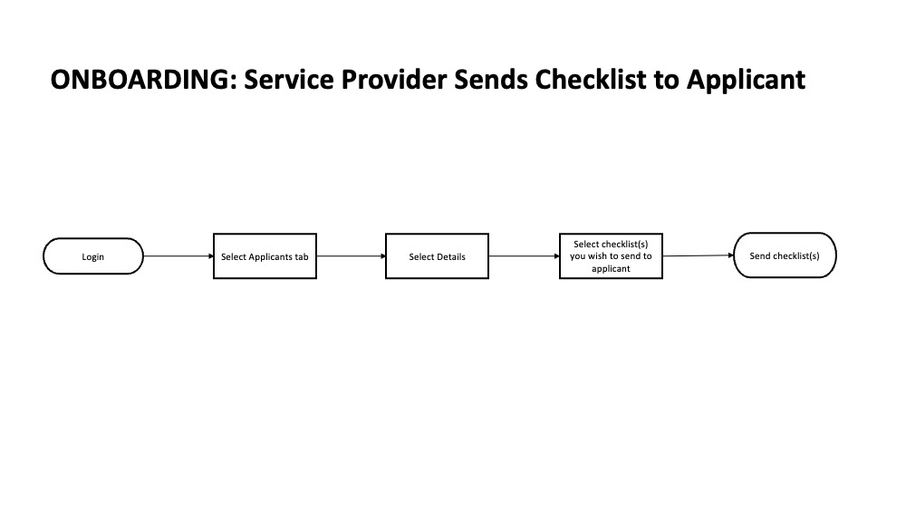
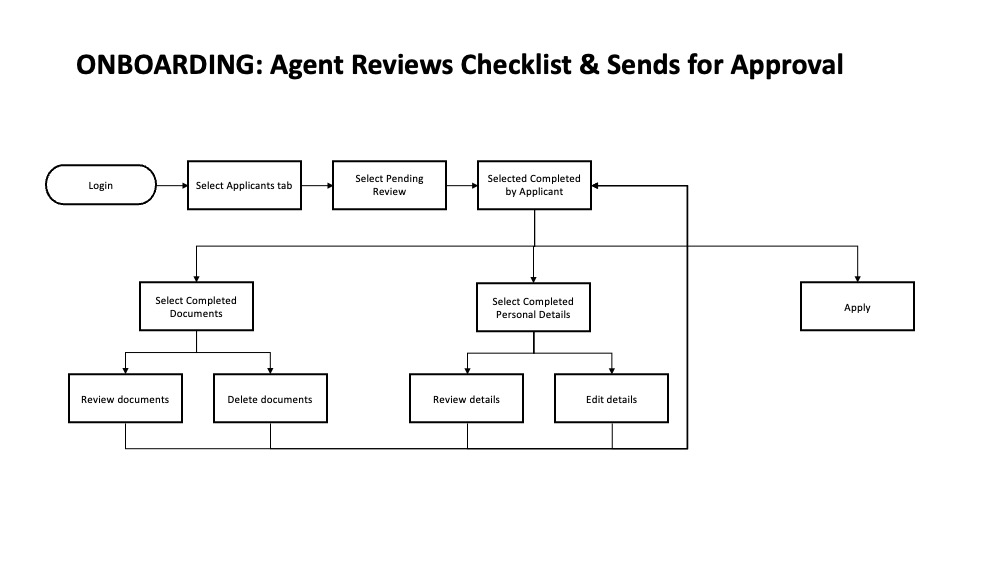
Mid-fidelity wireframes: six core screens explored before hi-fi design.
05 — Deliver
Hi-fi prototype across the full platform
The final designs covered login and onboarding, a dashboard for daily overview, marketplace and partner management, applicant tracking, template libraries, and a form builder for custom application questions. Accessibility was a constraint throughout, iconography, dropdowns, language, and screen-reader compatibility all had to be considered alongside cost limits on assets.
This was a concept delivered as part of my Academy Xi coursework, not a shipped product, but the process mirrored a real engagement: research, synthesis, iterative wireframes, and a clickable prototype ready for stakeholder review.


06 — Outcome
What the project taught me
AtOnce was my first end-to-end UX project, from canvas and interviews through to hi-fi screens, and it set the pattern for how I still work: map the ecosystem first, let research argue against your assumptions, and don't reach for visual design until the flows survive a wireframe conversation.
The education domain added complexity I hadn't dealt with before: multiple user types with different goals, compliance undertones, and accessibility requirements that couldn't be an afterthought. Balancing agent efficiency with student clarity was the through-line of every iteration.
Full double-diamond process
Discover, define, develop, and deliver, with research artefacts, personas, and prototypes at each stage.
Multi-sided platform
Designed for schools, agents, and students, each with different entry points into the same marketplace.
Form builder & templates
Custom application flows so organisations could adapt questions without developer support.
Accessibility-aware
Constraints around iconography, language, and assistive technology shaped decisions from wireframes onward.